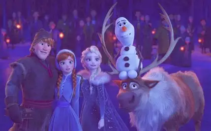

院线短片之外，Frozen 还有 VR 实验、疫情居家的治愈短剧、雪宝版迪士尼剧场和乐高联动——这一页把它们收齐。
Jeff Gipson 执导的 VR 短片（后推出平面版）：Evan Rachel Wood 饰演的阿伦黛尔母亲，向孩子讲述四大元素精灵的传说——火、水、风、土如何守护北境。它是 F2 元素世界观最诗意的「前传注脚」：VR 版 2020-06 登陆 Oculus，平面版 2021-02 上线 Disney+。
疫情期间的特别企划：动画师 Hyrum Osmond 居家制作、Josh Gad 居家配音的雪宝小短剧，每集约 2 分钟，共约 21 集；2020-04-06 起在 YouTube/Twitter 发布，以混剪《I Am with You》收尾。雪宝用最治愈的方式陪全世界居家隔离——迪士尼史上最「轻」的官方内容。
Disney+ 短片系列，共 5 集：雪宝用他「独有的方式」复述五部迪士尼经典——《小美人鱼》《阿拉丁》《狮子王》《魔发奇缘》《海洋奇缘》。灵感正是 F2 里雪宝 90 秒复述第一部的名场面；每集约 4 分钟，2021-11-12 上线。
乐高联名的网络短篇系列：为了帮斯文找回被掠走的极光，艾莎、安娜一行踏上乐高化的北境冒险。轻松搞笑的玩具向内容，正片配音阵容多数回归。